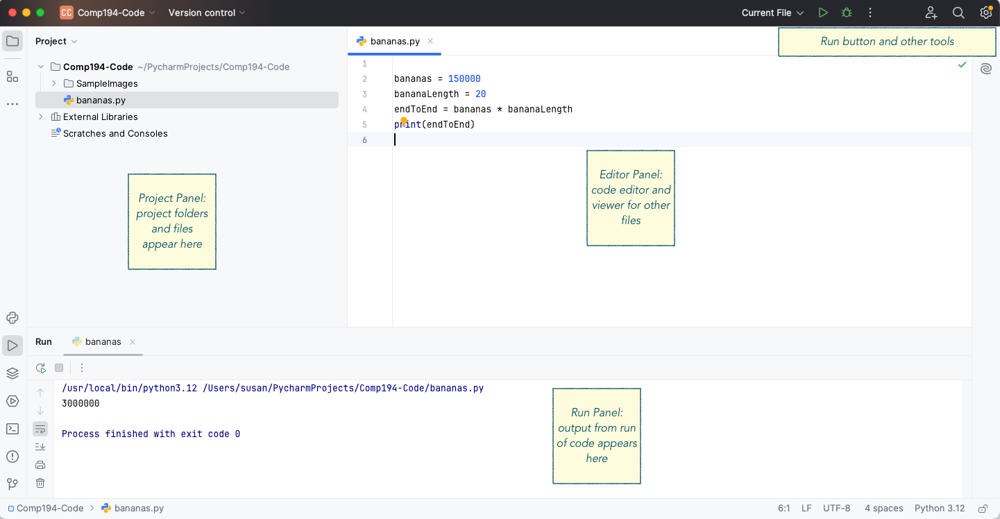

Today you will learn a bit about Python, and some basic kinds of data Python can manipulate. You’ll learn how to store values in variables, and how to build expressions that can be evaluated to produce a value. You will learn how to put sequences of Python statements and expressions in a file, called a script, which can be saved and re-run at a later point.
What to hand in: This activity will use a Github assignment to distribute code to you (see the How to Use Github and Git Through PyCharm document for details). You will modify some of the files provided to you, and you will add two new files, bikescript.py and flowers.py. You will then push your code to the Github assignment to hand it in.
Python
Python provides an interactive shell that we use to communicate with it, much like a calculator provides an interface that we use to communicate with it. With Python, you can type a series of Python statements into the shell, and get immediate responses to each one. You can also package up a series of statements as a script, in a file. When you run the script, Python executes each statement in order.
PyCharm
There are many different applications we could use when writing Python programs, much as there are many different text editor and word processor applications for writing papers. Your books may refer to a program editor called IDLE, which typically comes with Python when you download it. We will not use IDLE this semester. Instead, we will use an editor called PyCharm.
First, look at the Getting Started with Python and PyCharm document and work through the sections on starting up PyCharm, setting up a project, and creating a Python file.
If you haven’t already done so, create a project for this activity. You should then see several areas in the PyCharm window, similar to Figure 1. At the left is the Project panel, where you can see the project and the files that are in it. On the right, the largest panel is the editor, where you can create program files.

Figure 1: PyCharm Layout, annotated
The panel at the bottom in Figure 1 is used to display the output when we run a Python code file, but it can also be used to interact with Python through the Python Console. Typically, you can find and open the Python Console by looking for the Python Icon (!Images/ICA-1-Images/PyConsoleIcon.png) and clicking on it. If you cannot find it, ask for help!
Click in the Python Console area, where you see the >>> symbol. That symbol is a prompt, it is Python’s way of telling you that it is ready to accept input from you. Note that you can change the size of each area in the window by clicking and dragging in the space between regions.
Try these examples
Try the examples below in PyCharm’s console, typing each one in turn. Note: variables in computer science are similar to variables in math, but not identical. Think of a variable as being a name for a box in the computer’s memory, where you can stick a value of some kind.
5+2# Computes the sum of two numbersx =100# Assigns the value 100 to variable x(2* x) -33# Computes the value 2x-332**4# Computes the value $$2^4$$, (** means exponentiation)z = (x - (5*4)) # Assigns the value of the expression to variable zprint(10*3, x, z) # Prints the values of each expression on a linestrng ='Hello there'# Assigns variable strng to be the stringprint(strng) # Print the values of the strng variable
30 100 80
Hello there
A variable in a programming language represents a piece of the computer’s memory, where we can store data. In Python any variable can hold any kind of data, no matter the size or type. A **variable assignment statement*, like x = 100 above, assigns the name x to a particular location in memory, and stores the value of 100 in it. Only the value of the righthand side of the assignment is stored. We can reassign any variable to a new value at any time, just by writing another assignment statement.
Experiment with this by adding to this script in PyCharm: insert two lines after the first print statement in the script. Reassign x to have the value 250, and then copy the print statement a second time after that. What happened to the value of z?
There is nothing to hand in for this part.
Creating scripts
Next, let’s experiment with the editor pane. We can write a series of Python statements in the editor pane, and save them to a file. Then we can ask Python to perform the entire set of statements one after the other.
To create a new Python code file, you can either (1) select New… from the File menu , (2) right-click (control-click on Mac) on either the project folder name or one of the code file names and select New, or (3) use the keyboard shortcut (command-N on Mac, alt-Insert on Windows). Make sure to select Python File as the type of new thing to create, and give a name for the file when prompted. PyCharm will add the .py extension to the filename if you leave it off.
Create a new Python file called bikescript.py, and copy the Python statements below into that file. The script below calculate how many days a bicycle trip will take, if you can bike 50 miles each day.
tripDist =420# total miles in the tripbikePerDay =50# miles you can bicycle in a daytripDays = tripDist / bikePerDayprint("To bike", tripDist, "miles, ", bikePerDay, "miles per day,")print(" takes", tripDays, "days.")
To bike 420 miles, 50 miles per day,
takes 8.4 days.
To run this script, either select Current File as the current run option, and then click the green arrow run button (both in the upper right corner of the window), or right-click on the background of the editor panel and select Run. Once you have run the program once, you can use the right arrow in the bottom left or the upper right to run it again. Holding down control-shift-r will also run the script.
Run your script, and make sure that you get the same result as is displayed above.
To hand in: You will hand in this script file when you are done, so don’t erase it or overwrite the script contents!
Debugging Programs
Your project should already have a folder called buggyScripts that contains five Python code files. Each of these files has a bug of one kind or another in it.
Just as when you write a paper, you must take time to proofread it to find typos and other mistakes, when you write a program, you must debug it to find all errors in your scripts. But because you are communicating with a machine, not a person, you have to be exact: the computer cannot understand you at all if there are errors, bugs, in your code. Or the computer may do exactly what you wrote, but not what you meant to do.
It is also important that you learn to read code, and to predict what will happen when you run the code. Just like learning a human language, you must learn to read if you want to learn to write!
Your reading talked about three kinds of errors in a program: syntax errors, runtime errors, and semantic errors. Look at each of the scripts stored in files scriptA.py through scriptE.py, in the buggyscripts folder. Open each script in PyCharm, and find the bug or bugs in it. Change the script to correct the bug (or at least to stop it from happening). Add a comment to the file that describes what you did.
How do you find the bugs? Take it step by step:
Start by seeing if PyCharm itself finds anything wrong, and read what it says. Look for a red squiggly line under code, or a red horizontal line at the right edge of the edit panel. Hover over the red line, and it will pop up an explanation of what it sees as wrong.
Try running the program, and read any error message that appears (printed in red). It will specify the kind of error, and tell you on what line of the code the error was detected.
Add print statements before the line where the error, if any, took place, and display the values of variables, or just a message to tell you that the program got to that line.
Read through the program line by line and predict what should happen, then check if it really is what is happening.
If no error is detected by PyCharm, and no error occurs when you run the program, the last step is to check if the output of the program is correct. Logical errors occur when we calculate something incorrectly: always check if the output is correct!
To hand in: Hand in these scripts, with corrections and comments added (as described above).
Create your own script
Suppose I want to plant a garden bed with flowers. Each flower must sit in the middle of a 6 inch by 6 inch square to ensure it has enough room to grow. Because I am obsessive about order, I want the flowers laid out in a perfect grid: rows and columns. If my garden bed is 10 feet long, and 2 feet wide, how many flowers would I need to buy to make my grid? (For those new to American units, there are 12 inches in a foot.)
You can compute how many rows of flowers will fit in the bed, and how many columns for each row. Then multiply to find the total number of flowers.
Create a new script file called flowers.py. In that file, define a variable bedLen to hold the value 10 (the length in feet of my garden bed), and define variable bedWidth to be the value 2 (the width in feet of my garden bed). Then write a Python expression to calculate how many rows of flowers will fit in the bed, and how many columns of flowers. Define variables to hold each of these values. Then compute and print the total number of flowers, along with an explanatory string.
Run the script, and use the tools from earlier sections to debug your program until it computes the right value.
Change bedLen to be 30 and bedWidth to be 3.5, and test your program. Does it correctly calculate the number of flowers for this new garden bed size? Make your program general enough to work for any reasonable length and width.
To hand in: The flowers.py file should be saved, not deleted or overwritten, to hand in.
Handing in this assignment
Once you have finished editing all the Python files for this activity, you will need to Commit and then Push your code. See the appropriate section of the How to Use Github and Git Through PyCharm for details, and ask for help if you need it.